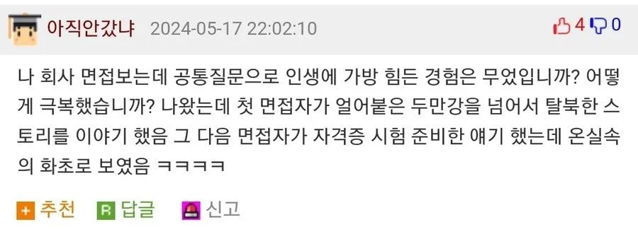

ㅋㅋㅋㅋㅋㅋㅋㅋㅋㅋㅋㅋㅋㅋㅋㅋㅋ

ㅋㅋㅋㅋㅋㅋㅋㅋㅋㅋㅋㅋㅋㅋㅋㅋㅋ
저 면접이 가장 힘든 경험이 되겠네 ㅋㅋ
이 썰 섞었으면 얘가 이겼겠닼ㅋㅋㅋ
죽을뻔한 경험. 나만죽는게 아닌 가족들까지 걸린 경험..
저게 직무랑 연관없으면 점수못받지않나
다음에 그걸 어떻게 극복했고 여기서 배운 이런 점으로 이 업무에 이렇게 활용하겠습니다 하면 어필은 되겠지
저 질문이 보통 직무 자체보다 회사 다니다가 힘들때 얘가 어떻게 대처할까를 물어보는거라
모범답안은 힘든 일을 슬기롭게 극복해내겠다 이런거긴 함
어차피 다들 판에 박힌 말을 할거는 뻔하고
얼마나 힘든 경험에서 무엇을 깨닫고 대처했는가에 대해서 플러스 점수는 있을지 몰라도
그냥 평타만 쳐도 마이너스는 아님
힘든 일에 대해서 회피성 해결법을 얘기한다면 얘는 일이 힘들면 퇴사 하겠구나 하면서 마이너스 요인이 되는거고
하 다음 면접자는 자기 딴에는 면접보려고 열심히 준비했는데 자기 바로 전 발표자가 탈북 스토리를 가지고 왔을 때라고 대답했음 좋았을걸
?? : 블라블라 떠들고나서 '인줄 알았는데 지금이네요' 라고 덧붙이면 되겠다
그럼 3번부터는 어떻게 하냐 ㅋㅋㅋㅋ 찐고생, 센스 앞에서 다 써먹어버렸네
???: 저도 힘든 경험이 있었는데, 지금 보니 별로 힘들지 않았던거 같습니다!
다음 면접자는 지금이 가장 힘들지ㅋㅋㅋㅋ
가방이 왜 힘들지?
가장 힘든 경험 ㅇㅇ 그냥 오타임
임팩트는 확실하네 ㅋㅋㅋ다만 회사 면접에서 저 질문은 인생관이나 개인적인 고난을 풀라는게 아니라 뭐 일단 일터에서 같이 일할 사람 찾는거잖아 소개팅이나 상견례가 아니고 ㅋㅋ 직무나 회사와 연관을 잘 시켜야 할듯 질문 의도 자체도 이 회사나 업계 들어와서 어떤 노력들을 했다던가 경험을 쌓았다던가 아님 과거의 경험이 어떻게 회사에 도움이 될것이다 아님 나는 회사에서 이런것들을 할수가 있다
그래봤자 정작 눈앞에서 탈북썰 들으면 일단 다른 면접자들은 다 거기거 거기인내용이라 머리에 잊혀짐 ㅋㅋ
회사업무에 따라 간첩의심으로 국가주요 산업이면 취직못하는거아님?ㅋ
저건 진짜 목숨을 걸고 온거라서 이걸 이길만한건 없을거임 ㅋㅋ
압록강 건너고 걸어서 중국지나 라오스한국대사관까지 가서 망명한 썰도 있던데
저정도 스토리는 있어야 하구나 캄보디아 갔다올께
온다고? 누구맘대로?
맨손으로 호랑이라도 때려잡지 않는한 이기기 힘들듯해
당시는 힘들었지만 지금생각해보니 전 한번도 힘들었던적이 없었던것같습니다
두만강 탈출썰 뒤에 뭐라도 말한 면접자도 될놈이겠는데 이거